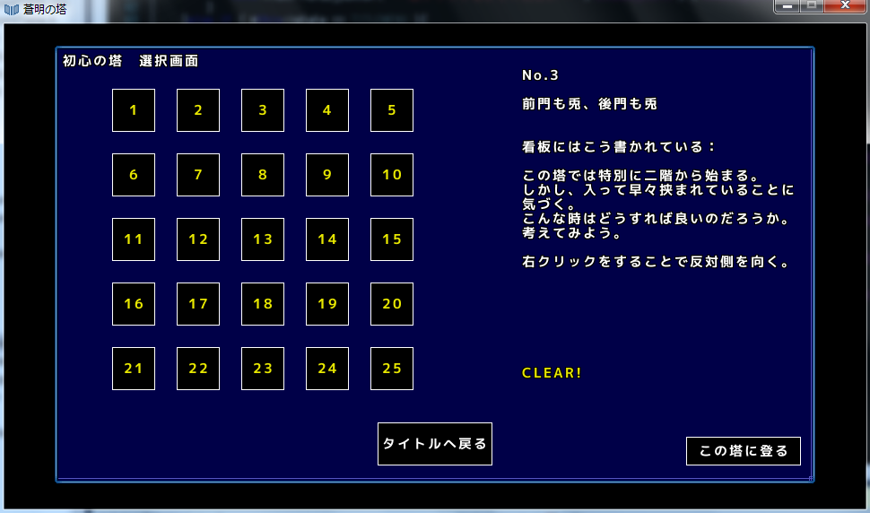
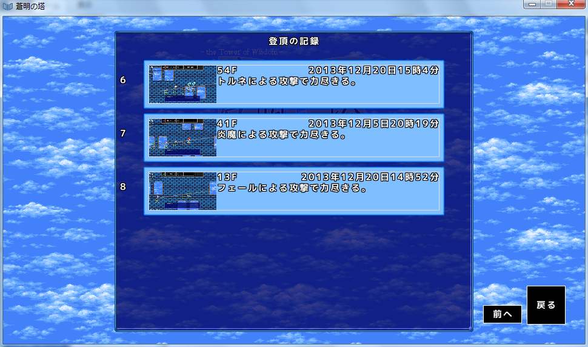
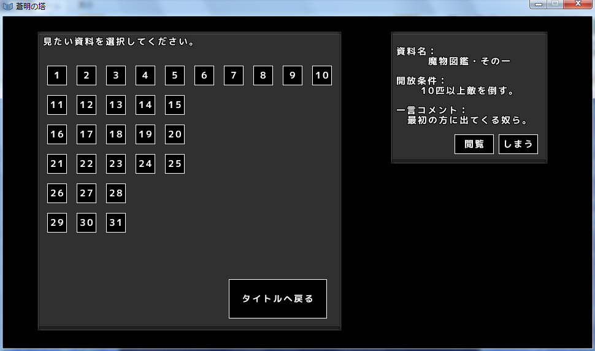

| 初心の塔 |
|---|
|
このゲームのジャンルは一本道ローグライクですが、ローグライクを遊んだことがない人でも安心。 初心の塔というモードでは実際にプレイしながらそのルールを覚えることができます。  |
| 登頂の記録 |
|
これまで遊んできた記録を保存し、いつでも観賞できるシステムです。 倒れた時、踏破した時のSSも同時に記録されます。 また、ツイッターと連携することで登頂の記録をツイートすることも可能です。  |
| 資料集 |
|
ゲーム本編では語られることのない、裏設定集を閲覧することができます。  |